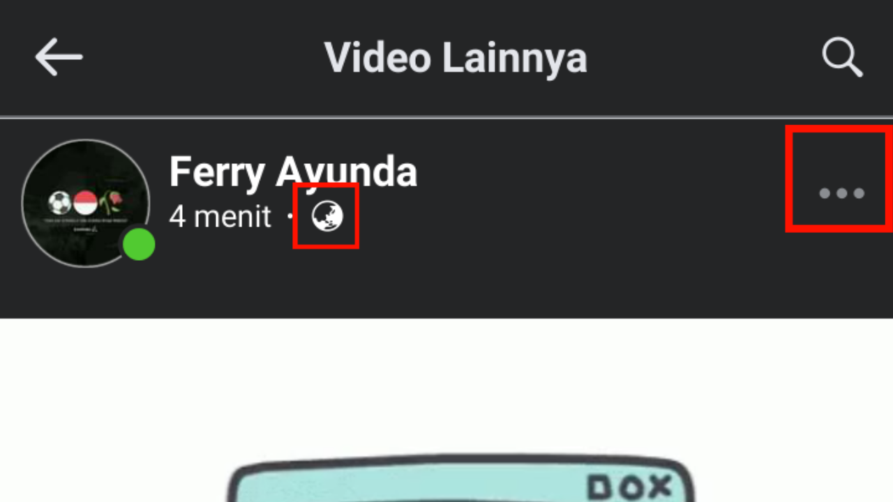
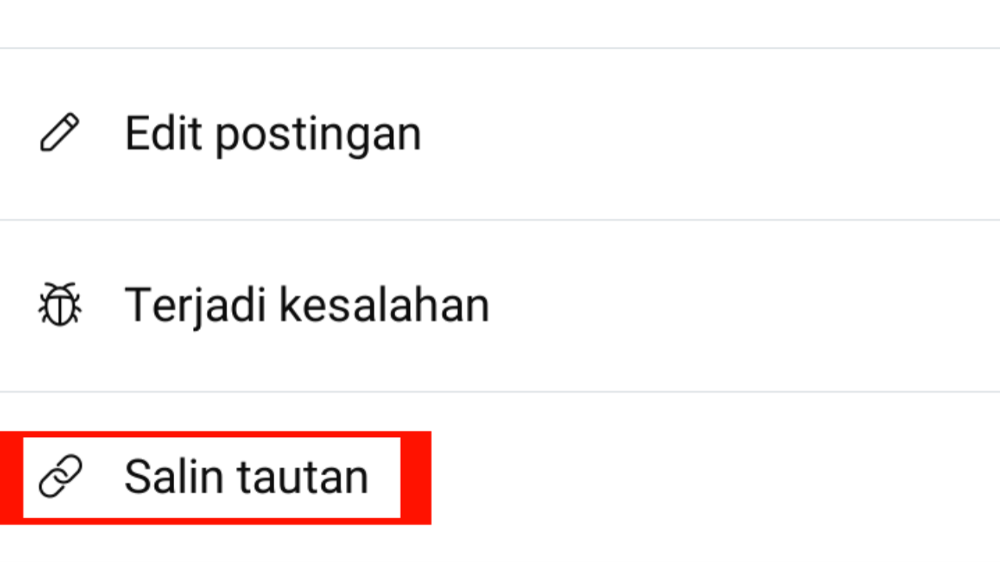
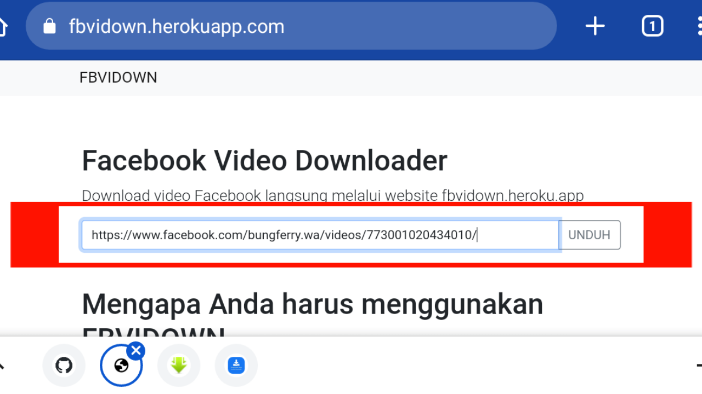
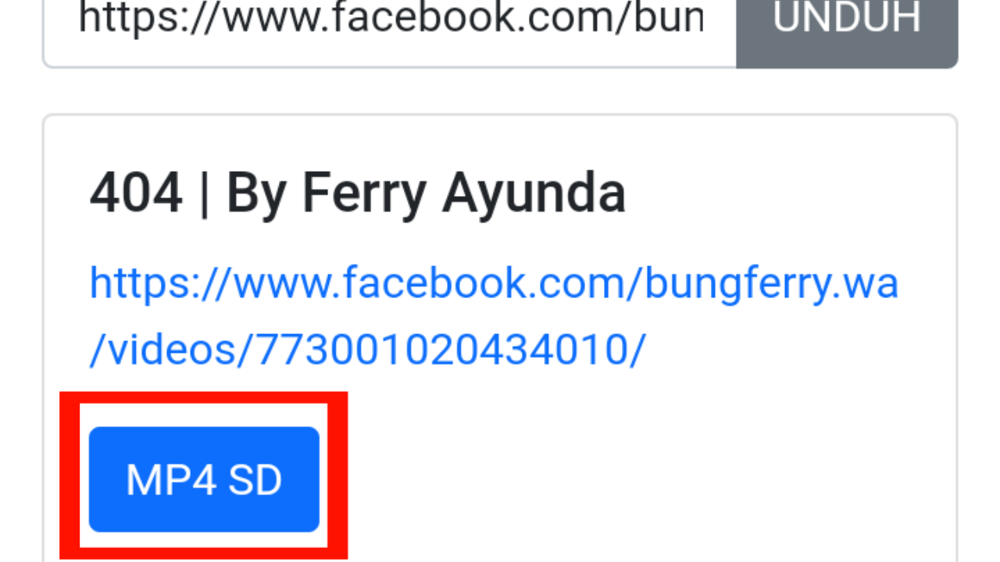

Facebook Video Downloader
Download video Facebook langsung melalui website fbvidown.herokuapp.com

Mengapa Anda harus menggunakan FBVIDOWN
fbvidown App adalah alat download facebook videos terbaik untuk membantu Anda Download video Facebook berkualitas tinggi: MP4 SD, MP4 HD. Unduh video Facebook ke ponsel, PC, atau tablet Anda dengan kualitas terbaik.
Gunakan download video dari Facebook kami dengan browser Anda. Tidak perlu menginstal perangkat lunak apa pun. Mendukung Android, dan iOS.
Cara Download video Facebook
Download video Facebook dengan format terbaik MP4 SD, MP4 HD gratis, tanpa iklan!
1. Salin tautan video facebook
Dari Facebook, salin tautan video yang ingin Anda unduh.


2. Tempel tautan video facebook
Lalu tempel tautan tersebut di fbvidown dan klik unduh.

3. Pilih kualitas video
Pilih kualitas video yang ingin Anda unduh.

4. Unduh facebook video
Tunggu server kami memproses dan mengunduh di perangkat Anda.
Apakah Anda memiliki pertanyaan untuk dijawab?
Silakan hubungi kami di sini. Kami akan membalas Anda secepat mungkin.